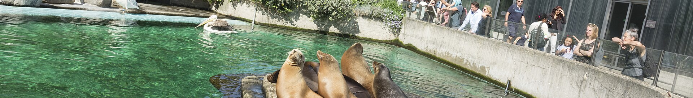

Personally, I appreiciate zoos (and other similar endeavors) for the attention, awareness, and education they provide the general public about wildlife. They also often contribute either directly or through donations towards wildlife rehabilitation and repopulation efforts.
There are many types of zoos, including aviaries and aquariums. This site is designed to show you cool pictures from and of those spaces.